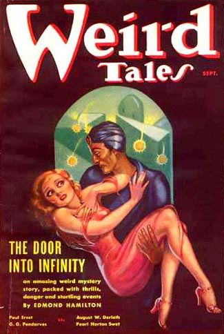
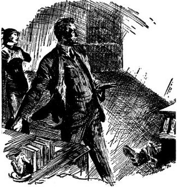

Mask of Death
By PAUL ERNST
[Transcriber Note: This etext was produced from Weird Tales August-September 1936. Extensive research did not uncover any evidence that the U.S. copyright on this publication was renewed.]
CONTENTS
- The Dread Paralysis
- The Living Dead
- The Stopped Watch
- The Shell
- Death's Lovely Mask
1. The Dread Paralysis
On one of the most beautiful bays of the Maine coast rested the town that fourteen months before had existed only on an architect's drawing-board.
Around the almost landlocked harbor were beautiful homes, bathing-beaches, parks. On the single Main Street were model stores. Small hotels and inns were scattered on the outskirts. Streets were laid, radiating from the big hotel in the center of town like spokes from a hub. There was a waterworks and a landing-field; a power house and a library.
It looked like a year-round town, but it wasn't. Blue Bay, it was called; and it was only a summer resort....
Only? It was the last word in summer resorts! The millionaires backing it had spent eighteen million dollars on it. They had placed it on a fine road to New York. They ran planes and busses to it. They were going to clean up five hundred per cent on their investment, in real estate deals and rentals.
On this, its formal opening night, the place was wide open. In every beautiful summer home all lights were on, whether the home in question was tenanted or not. The stores were open, whether or not customers were available. The inns and small hotels were gay with decorations.
But it was at the big hotel at the hub of the town that the gayeties attendant on such a stupendous opening night were at their most complete.
Every room and suite was occupied. The lobby was crowded. Formally dressed guests strolled the promenade, and tried fruitlessly to gain admission to the already overcrowded roof garden.
Here, with tables crowded to capacity and emergency waiters trying to give all the de luxe service required, the second act of the famous Blue Bay floor show was going on.
In the small dance floor at the center of the tables was a dancer. She was doing a slave dance, trying to free herself from chains. The spotlight was on; the full moon, pouring its silver down on the open roof, added its blue beams.
The dancer was excellent. The spectators were enthralled. One elderly man, partially bald, a little too stout, seemed particularly engrossed. He sat alone at a ringside table, and had been shown marked deference all during the evening. For he was Mathew Weems, owner of a large block of stock in the Blue Bay summer resort development, and a very wealthy man.
Weems was leaning forward over his table, staring at the dancer with sensual lips parted. And she, quite aware of his attention and his wealth, was outdoing herself.
A prosaic scene, one would have said. Opening night of a resort de luxe; wealthy widower concentrating on a dancer's whirling bare body; people applauding carelessly. But the scene was to become far indeed from prosaic—and the cause of its change was to be Weems.
Among the people standing at the roof-garden entrance and wishing they could crowd in, there was a stir. A woman walked among them.
She was tall, slender but delicately voluptuous, with a small, shapely head on a slender, exquisite throat. The pallor of her clear skin and the largeness of her intensely dark eyes made her face look like a flower on an ivory stalk. She was gowned in cream-yellow, with the curves of a perfect body revealed as her graceful walk molded her frock against her.
Many people looked at her, and then, questioningly, at one another. She had been registered at the hotel only since late afternoon, but already she was an object of speculation. The register gave her name as Madame Sin, and the knowing ones had hazarded the opinion that she, and her name, were publicity features to help along with the resort opening news.
Madame Sin entered the roof garden, with the assurance of one who has a table waiting, and walked along the edge of the small dance floor. She moved silently, obviously not to distract attention from the slave dance. But as she walked, eyes followed her instead of the dancer's beautiful moves.
She passed Weems' table. With the eagerness of a man who has formed a slight acquaintance and would like to make it grow, Weems rose from his table and bowed. The woman known as Madame Sin smiled a little. She spoke to him, with her exotic dark eyes seeming to mock. Her slender hands moved restlessly with the gold-link purse she carried. Then she went on, and Weems sat down again at his table, with his eyes resuming their contented scrutiny of the dancer's convolutions.
The dancer swayed toward him, struggling gracefully with her symbolic chains. Weems started to raise a glass of champagne abstractedly toward his lips. He stopped, with his hand half-way up, eyes riveted on the dancer. The spotlight caught the fluid in his upraised glass and flicked out little lights in answer.
The dancer whirled on. And Weems stayed as he was, staring at the spot where she had been, glass poised half-way between the table and his face, like a man suddenly frozen—or gripped by an abrupt thought.
The slave-girl whirled on. But now as she turned, she looked more often in Weems' direction, and a small frown of bewilderment began to gather on her forehead. For Weems was not moving; strangely, somehow disquietingly, he was staying just the same.
Several people caught the frequence of her glance, and turned their eyes in the same direction. There were amused smiles at the sight of the stout, wealthy man seated there with his eyes wide and unblinking, and his hand raised half-way between table and lips. But soon those who had followed the dancer's glances saw, too. Weems was holding that queer attitude too long.
The dancer finished her almost completed number and whirled to the dressing-room door. The lights went on. And now everyone near Weems was looking at him, while those farther away were standing in order to see the man.
He was still sitting as he had been, as if frozen or paralyzed, with staring eyes glued to the spot where the dancer had been, and with hand half raised holding the glass.
A friend got up quickly and hastened to the man's table.
"Weems," he said sharply, resting his hand on the man's shoulder.
Weems made no sign that he had heard, or had felt the touch. On and on he sat there, staring at nothing, hand half raised to drink.
"Weems!" Sharp and frightened the friend's voice sounded. And all on the roof garden heard it. For all were now silent, staring with gradually more terrified eyes at Weems.
The friend passed his hand slowly, haltingly before Weems' staring eyes. And those eyes did not blink.
"Weems—for God's sake—what's the matter with you?"
The friend was trembling now, with growing horror on his face as he sensed something here beyond his power to comprehend. Hardly knowing what he was doing, following only an instinct of fear at the unnatural attitude, he put his hand on Weems' half-raised arm and lowered it to the table. The arm went down like a mechanical thing. The champagne glass touched the table.
A woman at the next table screamed and got to her feet with a rasp of her chair that sounded like a thin shriek of fear. For Weems' arm, when it was released, went slowly up again to the same position it had assumed when the man suddenly ceased becoming an animate being, and became a thing like a statue clad in dinner clothes with a glass in its hand.
"Weems!" yelled the friend.
And then the orchestra began to play, loudly, with metallic cheerfulness, as the head waiter sensed bizarre tragedy and moved to conceal it as such matters are always concealed at such occasions.
Weems sat on, eyes wide, hand half raised to lips. He continued to hold that posture when four men carried him to the elevators and down to the hotel doctor's suite. He was still holding it when they sat him down in an easy chair, bent forward a bit as though a table were still before him, eyes staring, hand half raised to drink. The champagne glass was empty now, with its contents spotting his clothes and the roof garden carpets, spilled when the four had borne him from the table. But it was still clenched in his rigid hand, and no effort to get it from his oddly set fingers was successful....
The festivities of the much-heralded opening night went on all over the new-born town of Blue Bay. On the roof garden were several hundred people who were still neglecting talk, drinking and dancing while their startled minds reviewed the strange thing they had seen; but aside from their number, the celebrants were having a careless good time, with no thought of danger in their minds.
However, there was no sign of gayety in the tower office suite atop the mammoth Blue Bay Hotel and just two floors beneath the garden. The three officers of the Blue Bay Company sat in here, and in their faces was frenzy.
"What in the world are we going to do?" bleated Chichester, thin, nervous, dry-skinned, secretary and treasurer of the company. "Weems is the biggest stockholder. He is nationally famous. His attack of illness here on the very night of opening will give us publicity so unfavorable that it might put Blue Bay in the red for months. You know how a disaster can sometimes kill a place."
"Most unfortunate," sighed heavy-set, paunchy Martin Gest, gnawing his lip. Gest was president of the company.
"Unfortunate, hell!" snapped Kroner, vice president. Kroner was a self-made man, slightly overcolored, rather loud, with dinner clothes cut a little too modishly. "It's curtains if anything more should happen."
"Hasn't the doctor found out yet what's the matter with Weems?" quavered Chichester.
Kroner swore. "You heard the last report, same as the rest of us. Doctor Grays has never seen anything like it. Weems seems to be paralyzed; yet there are none of the symptoms of paralysis save lack of movement. There is no perceptible heart-beat—yet he certainly isn't dead; the complete absence of rigor mortis and the fact that there is a trace of blood circulation prove that. He simply stays in that same position. When you move arm or hand, it moves slowly back to the same position again on being released. He has no reflex response, doesn't apparently hear or feel or see."
"Like catalepsy," sighed Gest.
Kroner nodded and moistened his feverish lips.
"Just like catalepsy. Only it isn't. Grays swears to that. But what it is, he can't say."
Chichester fumbled in his pocket.
"You two laughed at me this evening when I got worried about getting that note. You talked me down again a few minutes ago. But I'm telling you once more, I believe there's a connection. I believe whoever wrote the note really has made Weems like he is—not that the note was penned by a crank and that Weems' illness is coincidence."
"Nonsense!" said Gest. "The note was either written by a madman, or by some crook who adopted a crazy, melodramatic name."
"But he predicted what happened to Weems," faltered Chichester. "And he says there will be more—much more—enough to ruin Blue Bay for ever if we don't meet his demands——"
"Nuts!" said Kroner bluntly. "Weems just got sick, that's all. Something so rare that most doctors can't spot it, but normal just the same. We can keep it quiet, and have him treated secretly by Grays. That'll stop publicity."
He rapped with heavy, red knuckles on the note which Chichester had laid on the conference table. "This is a fraud, a thin-air idea of some small shot to get money out of us."
He turned to the telephone to call Doctor Grays' suite again for a later report on Weems' condition. The other two bent near to listen.
A breath of air came in the open window. It stirred the note on the table, partially unfolded it.
"... disaster and horror shall be the chief, though uninvited, guests at your opening unless you comply with my request. Mathew Weems shall be only the first if you do not signify by one a. m. whether or not you will meet my demand...."
The note closed as the breeze died, flipped open again so that the signature showed, flipped shut once more.
The signature was: Doctor Satan!
2. The Living Dead
At two in the morning, two hours and a half after the odd seizure of Mathew Weems, and while Gest and Kroner and Chichester were in Doctor Grays' suite anxiously looking at the stricken man, eight people were in the sleek, small roulette room of the Blue Bay Hotel on the fourteenth floor.
The eight, four men and four women, were absorbed by the wheel. Their bets were scattered over the numbered board, and some of the bets were high.
The croupier, with all bets placed, spun the little ivory ball into the already spinning wheel, and all watched. At the door, a woman stood. She was tall, slender but voluptuously proportioned, with a face like a pale flower on her long, graceful throat. Madame Sin.
She came into the room with a little smile on her red, red lips. In her tapering fingers was held a gold-link purse. She did not open this to buy chips, simply walked to the table. There, with a smile, two men moved over a little to make a place for her.
"Thank you so much," she acknowledged the move. Her voice was as exotically attractive as the rest of her; low, clear, a little throaty. "I am merely going to watch a little while, however. I do not intend to play."
The wheel stopped. The ball came to rest in the slot marked nineteen. But the attention of those at the table was divided between it and the woman who was outrageous enough, or had sense of humor enough, to call herself Madame Sin. In the men's eyes was admiration. In the women's eyes was the wariness that always appears when another woman comes along whose attractions are genuinely dangerous to male peace of mind.
"Make your plays," warned the croupier dispassionately, holding the ball between pallid thumb and forefinger while he prepared to spin the wheel again.
The four couples placed bets. Madame Sin watched out of dark, exotic eyes. She turned slowly, with her gold-link purse casually held in her left hand; turned so that she made a complete, leisurely circle, as though searching for someone. Then, with her red lips still shaped in a smile, she faced the table again.
The croupier spun the wheel, snapped the ball into it. The eight players leaned to watch it....
And in that position they remained. There was no movement of any sort from any one of them. It was as though they had been frozen to blocks of ice by a sudden blast of the cold of outer space; or as though a motion picture had been stopped on its reel so that abruptly it became a still-life, with all the actors in mid-move and with half-formed expressions on their faces.
A tall blond girl was bent far over the table, with her left hand hovering over her bet, on number twenty-nine. Beside her a man had a cigarette in his lips and a lighter in his left hand which he had been about to flick. Two other men were half facing each other with the lips of one parted for a remark he had begun to make. The rest of the eight were gazing at the wheel with arms hanging beside them.
And exactly in these positions they remained, for minute after minute.
During that time Madame Sin looked at them; and her smile now was a thing to chill the blood. You couldn't have told why. Her face was as serene-looking as ever, and there were no tangible lines of cruelty in evidence in her face. Yet she looked like a she-fiend as she stared around.
She walked to the croupier, who stood gazing at his wheel, with his mouth open in the beginning of a yawn.
Down the hall came the clang of elevator doors, and the sound of laughter and voices. Madame Sin glided toward the door. There she paused, then went purposefully back to the table. She went swiftly from one to another of the frozen, stark figures in their life-like but utterly rigid positions, then back to the door.
Smiling, she left the room, passing five or six people who were about to enter it for a little gambling. She was almost to the elevator shafts when she heard a woman's scream knife the air, followed by a man's hoarse shout that expressed almost as much horror as the scream had done.
Still smiling, utterly composed, she stepped into an elevator—and the elevator boy shivered a bit as he stared at her. He had not heard the scream, did not know that anything was wrong. He only knew that something in this lovely woman's smile sent cold fingers up and down his spine.
It was a grim, white-faced trio that sat in the conference room of the Blue Bay Hotel at eleven next morning.
Chichester nor Gest nor Kroner—none had had a moment's sleep all night. They had been in Doctor Grays' suite with Weems when a shivering man—a well-known young clubman, too, which was unfortunate—stumbled up to tell of the dreadful thing to be seen in the roulette room.
With horror mounting in their breasts, half knowing already what they would see, the three had gone there.
Nine more, counting the croupier, in a state like that which Weems was in! Nine more people with all life, all movement, arrested in mid-motion! Ten now with some kind of awful paralysis gripping them in which they did not move nor seemingly breathe—ten who were dead by every test known to science, but who, as even laymen could see at a glance, were yet indubitably alive!
"Blue Bay Development is ruined," ground out Kroner. It had been said a dozen times by every one of the three; but the words made the other two look at him in frantic denial just the same.
"If we can keep it quiet—just for a little while—just until——"
"Until what?" snapped Kroner. "If we only had an idea when this mysterious sickness would leave these people! We could stall the news perhaps for a day, or even two days—if we could have some assurance that at the end of twenty-four or forty-eight hours they'd be all right again. But we haven't. They may be like that for months before they die—may even die in a few hours. Grays can't tell. This is all beyond his medical experience. So it seems to me we might as well make public announcements now, face ruin on the resort development, and get it over with."
Chichester spoke, almost in a whisper.
"This Doctor Satan, whoever he is, gives us assurance in his note. He says that if we pay what he demands, the ten will recover, and everything will be all right."
"And if we pay what he demands, we'll be ruined just the same as though we'd been killed by publicity," objected Gest.
Kroner glared at the wizened treasurer.
"I'm surprized you'd even suggest that, Chichester. But you've not only suggested it—you've pled for it all night long! Do you get a cut from Doctor Satan or something?"
"Gentlemen," soothed Gest, as Chichester half rose from his chair. "We're in too serious a jam to indulge in petty quarrels. We've got to decide what to do——"
"I move we call in the police," growled Kroner. "I still can't believe that any human being could induce such a state of catalepsy, or living death, or whatever you want to call it, in other human beings. Not unless he's a wizard or something. Nevertheless, in view of this threat note from Doctor Satan, there may be a definite criminal element here that the cops should know about."
"Let's wait on the police," objected Gest. "We have already done better than that in summoning this Ascott Keane to help us."
Chichester's dry skin flushed faintly.
"I still say that that was a stupid move!" he snapped. "Ascott Keane? Who is he, anyhow? He has no reputation for detective work or any other kind of work. A rich man's son—loafer—dilettante. What we should have done was contact Doctor Satan after his first note, after Weems was stricken. Then we would have saved the nine in the roulette room, and at the same time saved our project here."
"You'd pay this crook our entire surplus?" snarled Kroner. "You'd give him a million eight hundred thousand in cold cash, when you don't even know that he has had a hand in what ails the ten?"
"It's worth a million eight hundred thousand to save our stake in Blue Bay," said Chichester obstinately. "As for Doctor Satan's having a hand in the horrible fate of Weems and the rest—he told you beforehand that it would happen, didn't he?"
"Please," sighed Gest as for a second time the florid vice-president and the wizened treasurer snarled at each other. "We——"
The door of the office suite banged open. The assistant manager of the hotel staggered into the room. His blue eyes were blazing with excitement. His youngish face was contorted with it.
"I've just found out something that I think is of vital importance!" he gasped. "Something in the roulette room! I've been in there all night, as you know, looking around to see if I could find poison needles fastened to table or chairs, or anything like that, and quite by chance I noticed something else. The maddest thing! The roulette wheel! It's——"
He stopped.
"Go on, go on!" urged Kroner. "What about the roulette wheel? And what possible connection could it have with what happened to the people in that room?"
He stared at the young assistant manager, as did Gest and Chichester, with his hands clenched with suspense.
And the assistant manager slowly, like a falling tree, pitched forward on his face.
"My God——"
"What happened to him?"
The three got to him together. They rolled him over, lifted his head, began chafing his hands. But it was useless. And in a moment that was admitted in their faces as they looked at each other.
"Another victory for Doctor Satan," whispered Chichester, shuddering as though with palsy. "He's—dead!"
Gest opened his mouth as though to deny it, but closed his lips again. For palpably the assistant manager was dead, struck down an instant before he could tell them some vital news he had uncovered. He had died as though struck by lightning, at just the right time to save disclosure. It was as though the being who called himself Doctor Satan were there, in that office, and had acted to protect himself!
Shivering, Chichester glanced fearfully around. And Gest said: "God—if Ascott Keane were here——"
3. The Stopped Watch
Down at the lobby door, a long closed car slid to a stop. From it stepped two people. One was a tall, broad-shouldered man with a high-bridged nose, long, strong jaw, and pale gray eyes under heavy black eyebrows. The other was a girl, equally tall for her sex, beautifully formed, with reddish brown hair and dark blue eyes.
The two walked to the registration desk in the lobby.
"Ascott Keane," the man signed. "And secretary, Beatrice Dale."
"Your suite is ready for you, Mr. Keane," the clerk said obsequiously. "But we had no word of your secretary's coming. Shall we——"
"A suite for her on the same floor if possible," Keane said crisply. "Is Mr. Gest in the hotel?"
"Yes, sir. He is in the tower office."
"Have the boy take my things up. I'll go to the office first. Send word up there what suite you've given Miss Dale."
Keane nodded to Beatrice, and walked to the elevators.
"Secretary!" snorted the key clerk to the head bellhop. "What's he want a secretary for? He's never done any work in his life. Inherited umpteen million bucks, and plays around all the time. Wish I was Ascott Keane."
The head bellhop nodded. "Pretty soft for him, all right. Hardest job he has is to clip coupons...."
Which would have made Keane smile a little if he could have heard, for the clerk and the bellhop shared the opinion of him held by the rest of the world; an opinion he carefully fostered. Few knew of his real interest in life, which was that of criminal detection.
He tensed as he swung into the anteroom of the office suite. Gest, one of the rare persons who knew of his unique detective work, had babbled something of a Doctor Satan when he phoned long distance. Doctor Satan! The mention of that name was enough to bring Keane instantly from wherever he was, with his powers pitched to their highest and keenest point in an effort to crush at last the unknown individual who lived for outlawed thrills.
As soon as he opened the door, it was apparent that something was wrong. There was no one sitting at the information desk, and from closed doors beyond came the hum of excited voices.
Keane went to the door where the hum sounded loudest and opened that.
He stared in at three men bending over a fourth who lay on the floor, stark and motionless—obviously dead! Keane strode to them.
"Who are you, sir?" grated Kroner. "What the devil——"
"Keane!" breathed Gest. "Thank God you're here! There has just been a murder. I'm sure it's murder—though how it was done, and who did it, are utterly beyond me."
"This is your Ascott Keane?" said Kroner, in a slightly different tone. His eyes gained a little respect as they rested on Keane's light gray, icily calm eyes.
"Yes. Keane—Kroner, vice president. And this is Chichester, treasurer and secretary."
Keane nodded, and stared at the dead man.
"And this?"
"Wilson, assistant manager. He came in a minute or two ago, saying he had something of the utmost importance to tell us about the players in the roulette room...."
Keane nodded. He had been told of that just before he took a plane for Blue Bay. Gest swallowed painfully and went on:
"Wilson had just started to explain. He said something about the roulette wheel, and then fell dead. Literally. He fell forward on his face as though he had been shot. But he wasn't. There isn't a mark on his body. And he couldn't have been poisoned before he came in here. No poison could act so exactly, striking at the precise second to keep him from disclosing his find."
"Doctor's report?" said Keane.
"Grays, house physician, is on his way up now. We sent the information girl to get him. Didn't want to telephone. You know how these things spread. We didn't want the switchboard girls to hear of this just yet."
Keane's look of acknowledgment was grim.
"The publicity. Of course. We'll have to move fast to save Blue Bay."
"If you can save it, now," muttered Chichester.
The door opened, and Doctor Grays stepped in, with consternation in his brown eyes as he saw the man on the floor.
They left him to examine the body, and the three officials told Keane all the details they knew of the strange tragedy that had overtaken Weems and, two and a half hours later, the nine in the roulette room.
They returned to the conference room. Grays faced them.
"Wilson died of a heart attack," he said. "The symptoms are unmistakable. His death seems normal...."
"Normal—but beautifully timed," murmured Keane.
"Right," nodded the doctor. "We'll want an autopsy at once. The police are on their way here. They're indirectly in our employ, as are all in Blue Bay; but they won't be able to keep this out of the papers for very long!"
"Where are Weems and the rest?"
"In my suite."
"I'd like to see them, please."
In Doctor Grays' suite, Keane stared with eyes that for once had lost some of their calm, at the weird figures secluded in the bedroom. This room was kept locked against the possibility of a chambermaid or other hotel employee coming in by mistake. An unwarned person might well have gone at least temporarily insane at the sudden sight of the ten in that bedroom.
In a chair near the door sat Weems. He was bent forward a little as though leaning over a table. He stared unwinkingly at space. In his hand was still a champagne glass, raised near his lips.
Standing around the room were the nine others, each in the position he or she had been in when rigidity overtook them in the roulette room. They stared wide-eyed ahead of them, motionless, expressionless. It was like walking into a wax-works museum, save that these statuesque figures were of flesh and blood, not wax.
"They're all dead as far as medical tests show," Grays said. There was awe and terror in his voice. "Yet—they're not dead! A child could tell that at a glance. I don't know what's wrong."
"Why don't you put them to bed?" said Keane.
"We can't. Each of the ten seems to be in some kind of spell that makes it impossible for his body to take any but that one position. We've laid them down—and in a moment they're up again and in the former position, moving like sleep-walkers, like dead things! Look."
He gently pulled Weems' arm down.
Slowly, it raised again till the champagne glass was near his lips. Meanwhile the man's eyes did not even blink. He was as oblivious of the touch as if really dead.
"Horrible!" quavered Chichester. "Maybe it's some new kind of disease."
"I think not," said Keane, voice soft but bleak. He looked at a night table, heaped with jewelry, handkerchiefs, wallets, small change. "That collection?"
"The personal effects of these people," said Gest, wiping sweat from his pale face.
Keane went to the pile, and sorted it over. He was struck at once by a curious lack. He couldn't place it for an instant; then he did.
"Their watches!" he said. "Where are they?"
"Watches?" said Gest. "I don't know. Hadn't thought of it."
"There are ten people here," said Keane. "And only one watch! Normally at least eight of them would have had them, including the women with their jeweled trinkets. But there's only one.... Do you remember who owned this, and where he wore it?"
He picked up the watch, a man's with no chain.
"That's Weems' watch. He had it in his trousers pocket."
"Odd place for it," said Keane. "I see it has stopped."
He wound the watch. But the little second hand did not move, and he could only turn the winding-stem a little, proving that it had not run down.
The hands said eleven thirty-one.
"That was the time Weems was—paralyzed?" said Keane.
Gest nodded. "Funny. His watch stopped just when he did!"
"Very funny," said Keane expressionlessly. "Send this to a jeweler right away and have him find out what's wrong with it. Now, you say your assistant manager was struck dead just as he said something about the roulette wheel?"
"Yes," said Gest. "It was as though this Doctor Satan were right there with us and killed him with a soundless bullet just before he could talk."
Keane's eyes glittered.
"I'd like to look over the roulette room."
"The police are here," said Grays, turning from his phone.
Keane stared at Gest. "Keep them out of the roulette room for a few minutes."
He strode out to the elevators....
His first concern, after locking himself into the room where nine people had been stricken with something which, if it persisted, was worse than any death, was the thing the assistant manager had mentioned before death hit him. The roulette wheel.
He bent over this, with a frown of concentration on his face. And his quick eyes caught at once a thing another person might have overlooked for quite a while.
The wheel was dish-shaped, as all roulette wheels are. In its rounded bottom were numbered slots, where the little ivory ball was to end its journey and proclaim gambler's luck.
But the little ball was not in one of the bottom slots!
The tiny ivory sphere was half up the rounded side of the wheel, like a pea clinging alone high up on the slant of a dish!
An exclamation came from Keane's lips. He stared at the ball. What in heaven's name kept it from rolling down the steep slant and into the rounded bottom? Why would a sphere stay on a slant? It was as if a bowl of water had been tilted—and the water's surface had taken and retained the tilt of the vessel it was in instead of remaining level!
He lifted the ball from the sloping side of the wheel. It came away freely, but with an almost intangible resistance, as if an unseen rubber band held it. When he released it, it went back to the slope. He rolled it down to the bottom of the wheel. Released, it rolled back up to its former position, like water running up-hill.
Keane felt a chill touch him. The laws of physics broken! A ball clinging to a slant instead of rolling down it! What dark secret of nature had Doctor Satan mastered now?
But the query was not entirely unanswered in his mind. Already he was getting a vague hint of it. And a little later the hint was broadened.
The phone rang. He answered it.
"Mr. Keane? This is Doctor Grays. The autopsy on Wilson has been begun, and already a queer thing has been disclosed. It's about his heart."
"Yes," said Keane, gripping the phone.
"His heart is ruptured in a hundred places—as though a little bomb had exploded in it! Don't ask me why, because I can't even give a theory. It's unique in medical history."
"I won't ask you why," Keane said slowly. "I think—in a little while—I'll tell you why."
He hung up and strode toward the door. But at the roulette table he paused and stared at the wheel with his gray eyes icily blazing.
It seemed to him the wheel had moved a little!
He had unconsciously lined up the weirdly clinging ball with the knob on the outer door, as he examined it awhile ago. Now, as he stood in the same place, the ball was not quite in that line. As if the wheel had rotated a fraction of an inch!
"Yes, I think that's it," he whispered, with his face a little paler than usual.
And a little later the words changed in his brain to: "I know that's it. A fiend's genius.... This is the most dangerous thing Doctor Satan has yet mastered!"
He was talking on the phone to the jeweler to whom Weems' watch had been sent.
"What did you do to that watch?" the jeweler was saying irritably.
"Why?" parried Keane.
"There doesn't seem to be anything wrong with it. And yet it simply won't go. And I can't make it go."
"There's nothing wrong with it at all?"
"As far as I can find out—no."
Keane hung up. He had been studying for the dozenth time the demand note Doctor Satan had written the officials:
"Gentlemen of the Blue Bay Development: This is to request that
you pay me the sum of one million, eight hundred and two
thousand, five hundred and forty dollars and forty-eight cents
at a time and place to be specified later. As a sample of what
will happen if you disregard this note, I shall strike at one
of your guests, Mathew Weems, within a few minutes after you
read this. I guarantee that disaster and horror shall be the
chief, though uninvited, guests at your opening unless you
comply with my request. Mathew Weems shall be only the first if
you do not signify by one a. m. whether or not you will meet my
demand. Doctor Satan."
Keane gave the note back to Blue Bay's police chief, who fumbled uncertainly with it for a moment and then stuck it in his pocket. Normally a competent man, he was completely out of his depth here.
One man with a heart that seemed to have been exploded internally; ten people who were dead, yet lived, and who stood or sat like frozen statues....
He looked pleadingly at Ascott Keane, whom he had never heard of but who wore authority and competence like a mantle. But Keane said nothing to him.
"An odd extortion amount," he said to Gest. "One million, eight hundred and two thousand, five hundred and forty dollars and forty-eight cents! Why not an even figure?"
He was talking more to himself than to the president of Blue Bay. But Gest answered readily.
"That happens to be the precise sum of the cash reserve of Blue Bay Development."
Keane glanced at him sharply. "Is your financial statement made public?"
Gest shook his head. "It's strictly confidential. Only the bank, and ourselves, know that cash reserve figure. I can't imagine how this crook who signs himself Doctor Satan found it out."
4. The Shell
The house was serene and beautiful on the bay shore. The sun beat back from its white walls, and glanced in at the windows of the rear terrace. It shone on a grotesque figure there; a man with the torso of a giant, but with no legs—a figure that hitched itself along on the backs of calloused hands, using muscular arms as a means of locomotion.
But this figure was not as bizarre as the one to be found within the house, behind shades drawn to keep out any prying eyes.
Here, in a dim room identifiable as a library, a tall man stood beside a flat-topped desk. But all that could be told of the figure was that it was male. For it was cloaked from heels to head in a red mantle. The hands were covered by red rubber gloves. The face was concealed by a red mask, and over the head was drawn a red skull-cap with two small projections in mocking imitation of Lucifer's horns.
Doctor Satan!
In the red-gloved hands was a woman's gold-link purse. Doctor Satan opened it. From the purse he drew a thing that defied analysis and almost defied description.
It was of metal. It seemed to be a model in gleaming steel of a problem in solid geometry: it was an angular small cage, an inch wide by perhaps three and a half inches square. That is, at first it seemed square. But a closer look revealed that no two corresponding sides of the little cage were quite parallel. Each angle, each line was subtly different.
Doctor Satan pointed it at the library wall. The end he pointed was a trifle wider than the end heeled in the palm of his hand. On this wider end was one bar that was fastened only at one end. The red-covered fingers moved this bar experimentally, slowly, so that it formed a slightly altered angle with the sides....
The library wall was mist, then nothingness. The street outside was not a street. A barren plain stood there, strewn with rocky shale, like a landscape on the moon.
The little bar was moved back, and the library wall was once more in place. A chuckle came from the red-masked lips; a sound that would have made a hearer shiver a little. Then it changed to a snarl.
"Perfect! But again Ascott Keane interferes. This time I've got to succeed in removing him. An exploded heart...."
He put the mysterious small cage back in the gold-link purse, and opened the desk drawer. From it he took a business letterhead. It was a carbon copy, with figures on it.
"Bostiff...."
On the rear terrace the legless giant stirred at the call. He moved on huge arms to the door and into the library....
In his tower suite, Keane paced back and forth with his hands clasped behind him. Beatrice Dale watched him with quiet, intelligent eyes. He was talking, not to her, but to himself; listing aloud the points uncovered since his arrival here.
"A few seconds after talking with Madame Sin, Weems was stricken. Also, the lady with the odd name was seen coming from the roulette room at about the time when a party entered and found the croupier and eight guests turned from people into statues. But she was nowhere around when Wilson died in the conference room."
He frowned. "The watches were taken from all the sufferers from this strange paralysis, save Weems. By whom? Madame Sin? Weems' watch is absolutely in good order, but it won't run. The ball on the roulette wheels stays on a slant instead of rolling down into a slot as it should when the wheel is motionless. But the wheel doesn't seem to be quite motionless. It apparently moved a fraction of an inch in the forty-five minutes or so that I was in the room."
"You're sure you didn't touch it, and set it moving?" said Beatrice. "Those wheels are delicately balanced."
"Not that delicately! I barely brushed it with my fingers as I examined the ivory ball. No, I didn't move it. But I'm sure it did move...."
There was a tap at the door. He went to it. Gest was in the corridor.
"Here's the master key," he said, extending a key to Keane. "I got it from the manager. But—you're sure it is necessary to enter Madame Sin's rooms?"
"Very," said Keane.
"She is in now," said the president. "Could you—just to avoid possible scandal—inasmuch as you don't intend to knock before entering——"
He glanced at Beatrice. Keane smiled.
"I'll have Miss Dale go in first. If Madame Sin is undressed or—entertaining—Miss Dale can apologize and retreat. But I am sure Madame Sin will be unaware of intrusion. In spite of the conviction of your key clerk that she is in, I am quite sure that, at least figuratively, she is out."
"Figuratively out?" echoed Gest. "I don't understand."
"You will later—unless this is my fated time to lose in the fight I have made against the devil who calls himself Doctor Satan. Are Chichester and Kroner in the hotel?"
Gest shook his head.
"Kroner is in the Turkish bath two blocks down the street. Chichester went home ten minutes ago."
"Madame Sin will be unaware of intrusion," Keane repeated enigmatically and with seeming irrelevance.
He turned to Beatrice, and the two went to the woman's rooms.
Keane softly closed Madame Sin's hall door behind him after Beatrice had entered first and reported that the woman was alone and in what seemed a deep sleep. At first, with a stifled scream, she had called out that Madame Sin was dead; then she had pronounced it sleep....
Keane went at once to the central figure of the living-room: the body of Madame Sin, on a chaise-lounge near the window. The woman was in a blue negligee, with her shapely legs bare and her arms and throat pale ivory against the blue silk. Her eyes were not quite closed. Her breast rose and fell, very slowly, almost like the breathing of a chloroformed person.
Keane touched her bare shoulder. She did not stir. There was no alteration of the deep, slow breathing. He lifted one of her eyelids. The eye beneath stared blindly at him, the lid went nearly closed again at the cessation of his touch.
"Trance," Keane said. "And the most profound one I have ever seen. It's about what I had expected."
"I've seen her somewhere before," said Beatrice suddenly.
Keane nodded. "You have. She is a movie extra, working now and then for the Long Island Picture Company. But I'm not much interested in this beautiful shell. For that's all she is at the moment—a shell, now emptied and unhuman. We'll look around. You give me your impressions as they come to you, and we'll see if they match mine."
They went to the bedroom of the apartment. Bedroom was like living-room in that it was impersonal, a standard chamber in a large hotel. But this seemed almost incredibly impersonal! There was not one picture, not one feminine touch. In the bath there were scarcely any toilet articles; and in the closet there was only an overnight bag and a suitcase by way of luggage, with neither of them entirely emptied of their contents.
"One impression I get is that these rooms have not been lived in even for twenty-four hours!" said Beatrice.
Keane nodded. "If Madame Sin retreated here only to fall into that deep trance, and did not wake again till it was time for her to venture out, the rooms would have just this look. And I think that is exactly what she has done!"
Beatrice looked deftly through Madame Sin's meager wardrobe. Keane searched dresser and table and bureau drawers. He wasn't looking for anything definite, just something that might prove the final straw to point him definitely toward the incredible goal he was more and more convinced was near.
He found it in the top of the woman's suitcase.
His fingers were tense as he unfolded a business letterhead. It was a carbon copy, filled with figures. And a glance told him what it was.
It was a duplicate of the financial statement of the Blue Bay Development Company—that statement which was held highly confidential, and which no one was supposed to have seen save the three Blue Bay officials, and a bank officer or two.
Keane strode to Madame Sin's phone, and got Gest on the wire.
"Gest, can you tell me if Kroner and Chichester are still out of the hotel?"
Gest's voice came back promptly. "Kroner is here with me now. I guess Chichester is still at his home on Ocean Boulevard; at any rate he isn't in the hotel——"
"Ascott!" Beatrice said tensely.
Keane hung up and turned to her.
"The woman—Madame Sin!" Beatrice said, pointing toward the still, lovely form on the chaise-lounge. "I thought I saw her eyes open a little—thought I saw her look at you!"
Keane's own eyes went down a bit to veil the sudden glitter in them from Beatrice.
"Probably you were mistaken," he said easily. "Probably you only thought you saw her eyelids move.... I'm going to wind this up now, I think. You go back to your suite, and watch the time. If I'm not back here in two hours, go with the police to the home of Chichester, the treasurer of this unlucky resort development. And go fast," he added, in a tone that slowly drained the blood from Beatrice's anxious face.
Chichester's home sat on a square of lawn between the new boulevard and the bay shore like a white jewel in the sun. It looked prosperous, prosaic, serene. But to Keane's eyes, at least, it seemed covered with the psychic pall that had come to be associated in his mind with the dreaded Doctor Satan. He walked toward the blandly peaceful-looking new home with the feeling of one who walks toward a tomb.
"A feeling that might be well founded," he shrugged grimly, as he reached the porch.
He could feel the short hair at the base of his skull stir a little as he reached the door of this place he believed to be the latest lair of the man who was amused to call himself Doctor Satan. And it stirred still more as he tried the knob.
The door was unlocked.
He looked at it for several minutes. A lock wouldn't have mattered to Keane, and Satan knew that as well as Keane himself. Nevertheless, to leave the door invitingly open like this was almost too obliging!
He opened the door and stepped in, bracing himself for instant attack. But no attack of any kind was forthcoming. The front hall in which he found himself was deserted. Indeed, the whole house had that curiously breathless feeling encountered in homes for the moment untenanted.
Down the hall was an open double doorway. Keane stared that way. He himself could not have told how he knew, but know he did, that beyond that doorway lay what he had come to find. He walked toward it.
Behind him, the street door opened again, very slowly and cautiously. An eye was put close to the resultant crack. The eye was dark, exotically lovely. It fastened on Keane's back.
Keane stared in through the doorway. He was gazing into a library, dimmed by drawn shades. He entered it, with every nerve-end in his body silently shrieking of danger.
The street door softly closed after admitting a figure that moved on soundless feet. A woman, with a face like a pale flower on an exquisite throat. Madame Sin.
Her face was as serenely lovely as ever. Not by a line had it changed. And yet, subtly, it had become a mask of beautiful death. Her eyes were death's dark fires as she moved without a sound down the hall toward the library. In her tapering hands was the gold-link bag.
In the library, Keane stood with beating heart over two stark, still bodies that lay on the thick carpet near a flat-topped desk. One was wizened, lank, a little undersized, with dry-looking skin. It was the body of Chichester. At first it seemed a corpse, but then Keane saw the chest move with slow, deep breaths, as the breast of the woman back at the hotel had moved.
But it was not this figure that made Keane's heart thud and his hands clench. It was the other.
This was a taller figure, lying on its back with hands folded. The hands were red-gloved. The face was concealed by a red mask. The body was draped by a red cloak. From the head sprang two little knobs, or projections, like Lucifer's horns. Doctor Satan himself!
"It's my chance," whispered Keane. "Satan—sending his soul and mind and spirit from his own shell—into that of others—Madame Sin—Chichester. Now his body lies here empty! If I killed that——"
Exotically beautiful dark eyes—with death in their loveliness—watched him from the library doorway as he bent over the red-robed figure. Sardonic death in lovely eyes!
"No wonder Gest thought that Wilson was killed in the conference room, just before he could tell of the roulette wheel, as if Doctor Satan had been there himself! Satan was there! And he was on the roof garden earlier, and in the roulette room! A trance for the woman, the crowding of Satan's black spirit into her body—and she becomes Madame Sin, with Satan peering from her eyes and moving in her mantle of flesh! A trance for the unfortunate Chichester—and Satan talks with Gest and Kroner as the Blue Bay treasurer, and can strike down Wilson when he comes to report! Chichester and Madame Sin—both Doctor Satan—becoming lifeless, trance-held shells when Satan's soul has left them!"
But here was Satan's physical shell, lying in a coma at his feet, to be killed at a stroke! His deadly enemy, the enemy of all mankind, delivered helpless to him!
"But if I do kill the body," Keane whispered, "will I kill the spirit too, or banish it from the material world so that humanity won't again be troubled? Satan's spirit, the essential man, is abroad in another body. If I kill this red-robed body, will it draw the spirit out of mortal affairs with it? Or would it simply deprive it of its original housing so that I'd have to seek Satan's soul in body after body, as I have till now sought him in the flesh in lair after lair? That would be—horrible!"
He drove away the grim thought. It was probable that with the death of his body, Doctor Satan in entirety would die, or at least pass out of mortal knowledge through the gateway called death. And the mechanics of forcing him through that gateway was to kill the body.
Behind him, Madame Sin crept closer and closer on soundless feet. Her red lips were set in a still smile. The gold-link purse was extended a little toward Keane. Her forefinger searched for the movable bar that changed angles of the queer, metal cage within.
Keane's hand raised to strike. His eyes burned down at the red-clad figure of the man at his feet, who was mankind's enemy. Behind him, Madame Sin's finger found the little bar....
It was not till then that Keane felt the psychic difference caused by the entrance of another into a room that had been deserted save for himself. Another person would not have felt that difference at all, but Keane had developed his psychic perceptions as ordinary men exercise and develop their biceps.
With an inarticulate cry he whirled, and leaped far to the side.

"The wall behind the spot where he had been disappeared."
The wall behind the spot where he had been disappeared as the gold-link bag continued to point that way. The woman, snarling like a tigress, swung her bag toward Keane in his new position. But Keane was not waiting. He sprang for her. His hand got her wrist and wrenched to get the gold-link purse away from her. It turned toward her, back again toward him, with the little bar moving as her hand was constricted over the thing in the purse.
It was a woman's body he struggled with. But there was strength in the fragile flesh beyond the strength of any woman! It took all his steely power to tear from her grasp the gold-link purse with its enclosed device. As he got it, he heard the woman's shrill cry of pain and terror, felt her sag in his arms. And then he heard many voices and stared around like a sleepwalker who has waked in a spot different from that in which he had begun his sleep—a comparison so exact that for one wild moment he thought it must be true!
He was in a familiar room.... Yes, Doctor Grays' room at the Blue Bay Hotel.
The people around him were familiar.... There was Gest. There were Kroner and Doctor Grays, and—Beatrice. There were the Blue Bay chief of police, and two men.
But the limp feminine form he held in his arms was Madame Sin, the fury he had been fighting in Chichester's library! And in his hand was still the gold link bag he had wrenched from her!
The woman in his arms stirred. She looked blankly up at him, stared around. A cry came from her lips.
"Where—am I? Who are you all? What are you doing in my room? But this isn't my room!"
Her face was different, younger-looking, less exotic. She wasn't Madame Sin; she was a frightened, puzzled girl.
Keane's brain had slipped back into gear, and into comprehension of what had happened.
"Where do you think you are?" he said gently. "And what is your name?"
"I'm Sylvia Crane," she said. "And I'm in a New York hotel room. At least I was the last I knew, when I opened the door and the man in the red mask came in...."
She buried her face in her hands. "After that—I don't know what happened——"
"Nor do any of us," quavered Gest. "For God's sake, Keane, give us some idea of what has happened here, if you can!"
It was over an hour later when Beatrice and Keane entered the door of his suite. It had taken that long to explain to the people in Doctor Grays' rooms. Even then the explanation had been but partial, and most of it had been frenziedly and stubbornly disbelieved even though proof was there.
Keane's shoulders were bowed a little and his face wore a bitter look. He had thwarted Doctor Satan in his attempt to extort a fortune from the resort. But once more his deadly enemy had got away from him. He had failed.
Beatrice shook her head.
"Don't look like that. The fact that you're here alive is a miracle that makes up for his escape. If you could have seen yourself, and that girl, when the police brought you back from Chichester's house! As soon as they set you down in the doctor's rooms, you and the girl came together. You fought again for her purse, as you say you started to do in Chichester's house ten hours ago. But you moved with such horrible slowness! It was like watching a slow-motion picture. It took you hours to raise your arm, hours to take the purse from her hand. And your expression changed with equal slowness.... I can't tell you how dreadful it was!"
"All due, as I said, to this," Keane sighed.
He stared at the little metal cage he had taken from the purse.
"The latest product of Doctor Satan's warped genius. A time-diverter, I suppose you might call it."
"I didn't understand your explanation in Grays' rooms, after you'd brought those people out of their dreadful coma," said Beatrice.
"I'll try again."
Keane held up the geometric figure.
"Time has been likened to a river. We don't know precisely what it is, but it seems that the river simile must be apt. Very well, we and all around us float on this river at the same speed. If there were different currents in the same river, we might have the spectacle of seeing those nearby move with lightning rapidity or with snail-like slowness as their time-environment differed from ours. Normally there is no such difference, but with this fantastic thing Doctor Satan has succeeded in producing them artificially.
"He has succeeded in working out several sets of angles which, when opposed against each other as this geometric figure opposes them, can either speed up or slow down the time-stream of whatever it is pointed at. The final angle is formed by this movable bar in its relation to the whole. By its manipulation, time can be indefinitely retarded or hastened. He utilized the bizarre creation in this way:
"In New York he contacted a quite innocent party by the name of Sylvia Crane. He hypnotized her, and forced his spirit into her body while hers was held in abeyance. Then 'Madame Sin' registered here. She made acquaintance with Weems. On the roof garden, she pointed the infernal figure at him, with the little bar turned to retard time. The result was that Weems suddenly lived and moved at immensely retarded speed. It took about twenty-four hours for his arm to raise the champagne glass to his lips, though he thought it took a second. Our actions were so swift by comparison that they didn't register on his consciousness at all. He confessed after I'd brought him out of his odd time-state with the device, that he seemed to raise his glass while in the roof garden, and start to lower it when he found himself abruptly in Doctor Grays' bedroom. He didn't know how he got there or anything else. It was the same with the nine in the roulette room. They came back to normal speed only a second or two after being retarded in the roulette room. But it was hours to us, and meanwhile they seemed absolutely motionless."
"How on earth did you ever get a hint of such a thing as this?" said Beatrice.
"Weems' watch gave a pointer. It was all right, the jeweler said, but it wouldn't run. Well, it did run—but at a speed so slow that it could not be recorded. The roulette wheel was another. The ivory ball did not roll down the side of the wheel because the wheel was rotating—with infinite slowness after being retarded by the same thing that made the people look like frozen statues. Satan, as Madame Sin, couldn't do anything about the wheel. But he—or 'she'—could and did take the watches from all concerned, to guard against discovery that way. However, there was no chance to get Weems' watch; there were always people around."
"You said Doctor Satan moved in the body of Chichester as he did in the girl's body."
"Yes. I got a hint of that when I observed that Chichester and Madame Sin never seemed to be in evidence at the same time. Also because the exact sum of Blue Bay's cash reserve was so readily learned. Again when Wilson was killed in a room where only the three officials sat. He was killed by Chichester, who was at the moment animated by Satan's soul. He was killed, by the way, by a speeding-up of time. The rest were retarded and suffered nothing but nerve shock. Wilson was killed when the speed of his time-stream was multiplied by a million: you can stop a heart without injuring it, but you can't suddenly accelerate a heart, or any other machine, a million times, without bursting it. That's why his heart looked as though it had blown up in his chest."
Keane stopped. The bitter look grew in his eyes.
"This failure was wholly my own fault," he said in a low tone. "I knew when I found the duplicate financial statement in Madame Sin's rooms that it was a trap to draw me to Chichester's home. Doctor Satan would never have been so careless as to leave a thing like that behind inadvertently. Knowing it was a trap, I entered it, and found Satan's soulless body. If I'd destroyed it immediately.... But I didn't dream that Madame Sin would follow me so quickly."
Beatrice's hand touched Keane's fleetingly. He was looking at the geometric figure and did not see the look in her eyes.
"The world can thank heaven you're alive," she said softly. "With you dead, Doctor Satan could rule the earth——"
There was a knock at the door. Gest was in the hall.
"Keane," he said. "I suppose this will sound like a small thing after all you've done. You've saved us from bankruptcy and saved Lord knows how many people from a living death from that time-business you tried to explain to us. Now there's one more thing. Workmen in Chichester's home tell us that they can't build up one of the walls of the library, which is non-existent for some reason. There the room is, with one wall out, and it can't be blocked up! Do you suppose you——"
Keane nodded, with a little of his bitterness relieved by a smile.
"I remember. The time-diverter was pointed at that wall for an instant as the girl and I struggled. Evidently it was set for maximum acceleration, to burst my heart as it did Wilson's. It got the library wall, which is gone because in the point of the future which it almost instantly reached, there is no library or home or anything else on that spot. I'll bring it back to the present, and to existence again, so you won't have a physical impossibility to try to explain to nervous guests of Blue Bay Resort."
"And after that," he added to himself, "I'll destroy this invention of Hell. And I wish its destruction would annihilate its inventor along with it—before he contrives some new and even more terrible toy!"